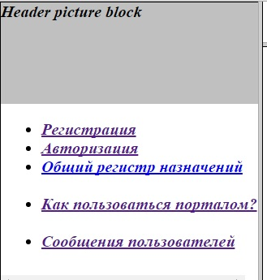
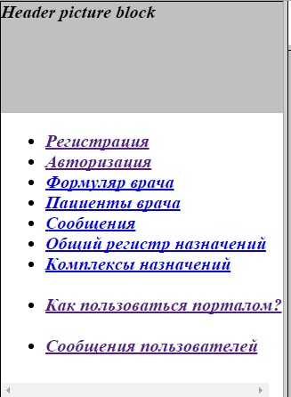
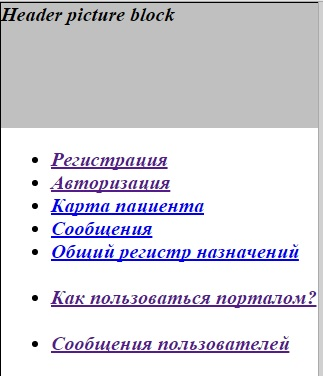
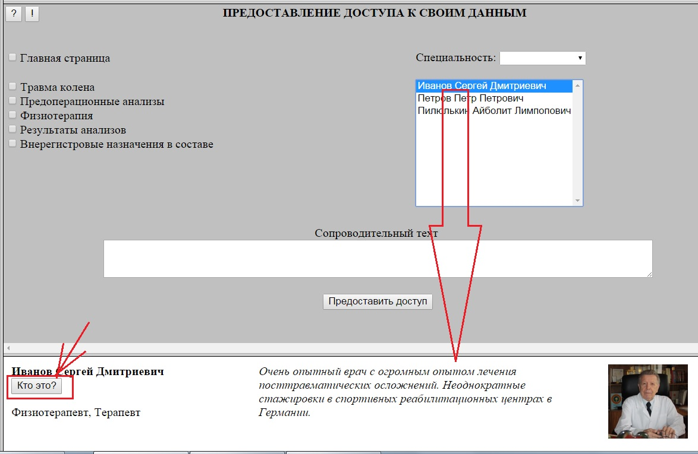
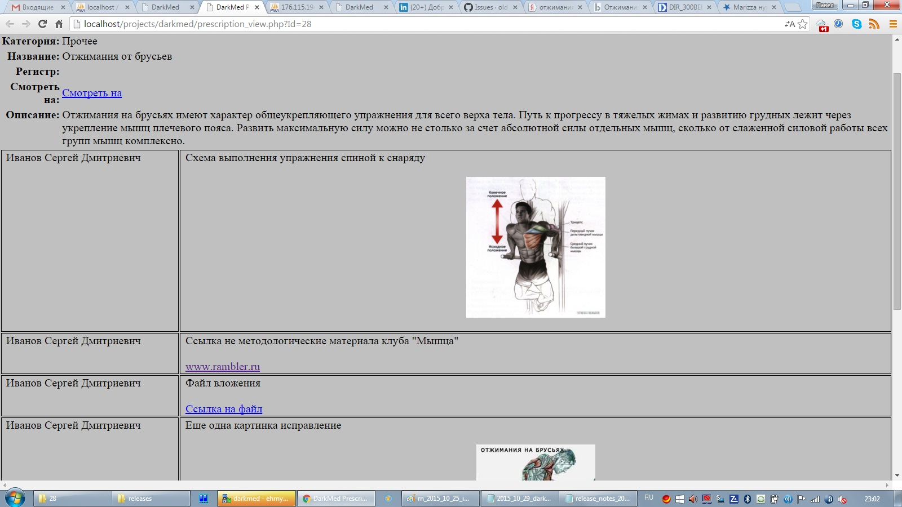
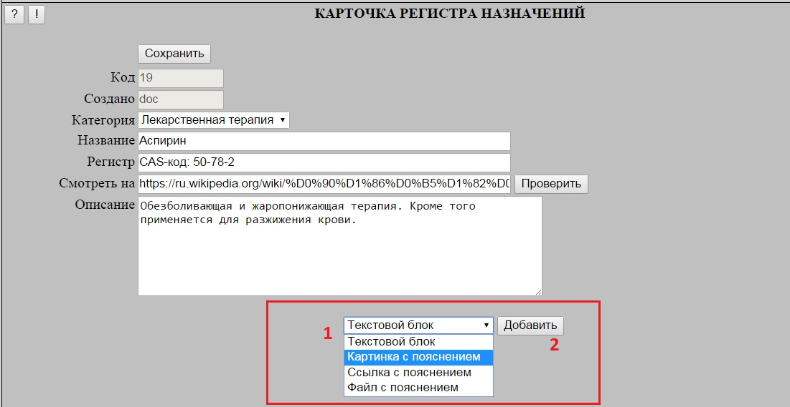
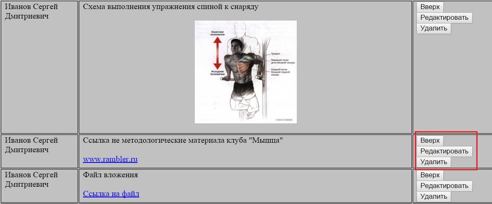
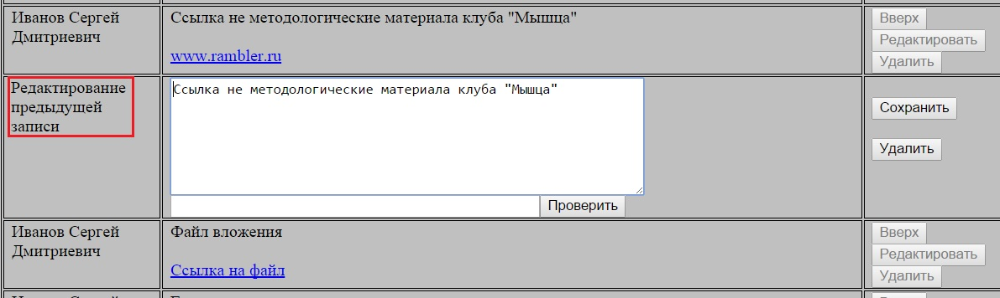

Подстройка главного меню под категорию пользователя
После авторизации вид главного меню подстраивается в зависимости от категории пользователя - отображаются только те позиции
которые доступны данной категории.
В исходном состоянии отображаются только позиции, рабора с которыми не требует авторизации:

Для Врача после успешной авторизации отображаются следующие позиции:

Для Пациента после успешной авторизации отображаются следующие позиции:

Сброс авторизации при успешной регистрации нового пользователя
Если авторизовавшийся пользователь производит регистрацию нового пользователя в разделе Регистрация,
то в случае успешной регистрации производится сброс текущей авторизации.
Это производится для того, чтобы исключить возможные ошибки, связанные с недопониманием пользователем под каким именно логином он сейчас работает.
Подтверждение категории "врач"
Для пользователей категории "врач" добавлен скрытый атрибут "подтверждение категории".
В исходном состоянии (после регистрации) атрибут имеет "отрицательное" значение и автоматически становится "положительным"
при при наличии в Формуляре врача заполненных полей "Фамилия" и "Имя".
Наличие данного атрибута позволяет:
Исключить появление в списке выбора врачей у пациентов пустых записей
Исключить появление в Регистре назначений анонимных авторов
Дает техническую возможность дисквалификации врача
Кнопка "Кто это?" в краткой карточке врача
В форме предоставления пациентом доступа к своим страницам в краткой карточке врача,
появляющейся при его выборе в списке врачей, добавлена кнопка "Кто это?".
При клике по кнопке на соседней вкладке открывается для просмотра полный формуляр врача.

Автосохранение пароля при авторизации
При Авторизации используется стандартное поле ввода пароля, что обеспечивает совместимость
с механизмами сохранения и автоподстановки паролей броузеров.
Дополнительные информационные разделы в Карточке назначения
В Карточке назначения в Общем регистре назначений появилась возможность добавлять (и редактировать) дополнительные разделы с текстовой информацией,
картинками, ссылками и прикрепленными файлами:

Для создания нового дополнительного блока необходимо в нижней части Карточки выбрать тип блока (1), после чего нажать кнопку "Добавить" (2).
В конец набора блоков будет добавлен новый блок в котором можно заполнить текстовой комментарий и, в зависимости, от типа блока указать
файл картинки, ссылку или прикладываемый файл.

С уже существующими блоками можно с помощью расположенных в правой колонке кнопок выполнить одно из следующих действий:
Удалить блок (кнопка "Удалить")
Переместить на одну позицию вверх (кнопка "Вверх")
Редактировать блок (кнопка "Редактировать")

При нажатии кнопки "Редактировать" под исправляемым блоком появляется форма редактирования, в которой можно поменять комментарий
и/или задать новый объект (файл картинки, ссылку и так далее). В случае, если новый объект не задан - используется ранее заданный.

Все изменения на форме (удаление и перемещение блоков, создание и редактирование блока) фиксируются нажатием кнопки "Сохранить".
При этом после входа в режим создания или редактирования блока любые действия до выполнения сохранения (или отмены создания/редактирования) блокируются.
При клике на картинку - она раскрывается в полном размере в соседней вкладке.
При клике на ссылку - соотвествующий ресурс открывается в соседней вкладке.